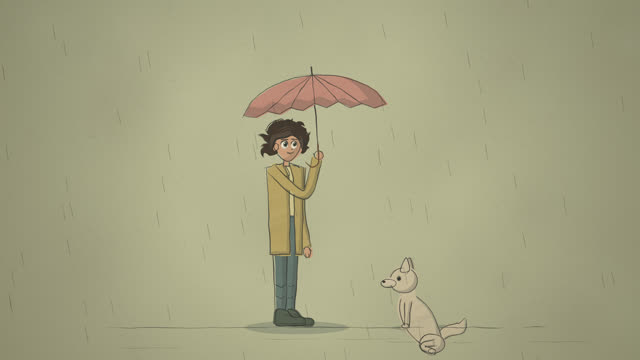
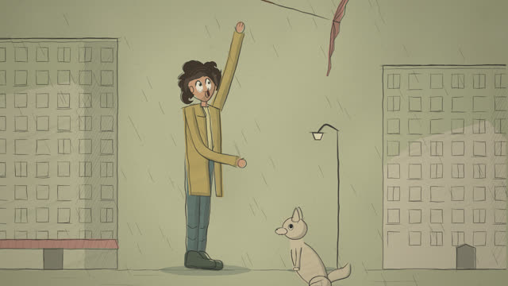
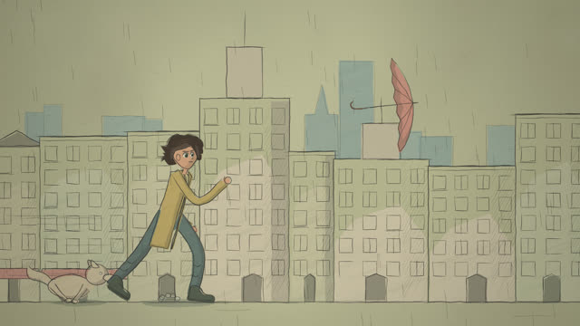
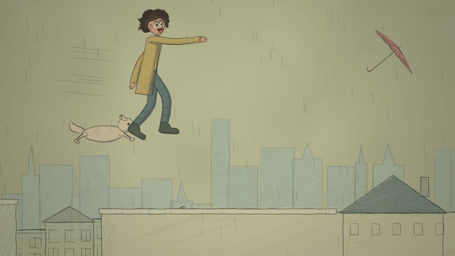
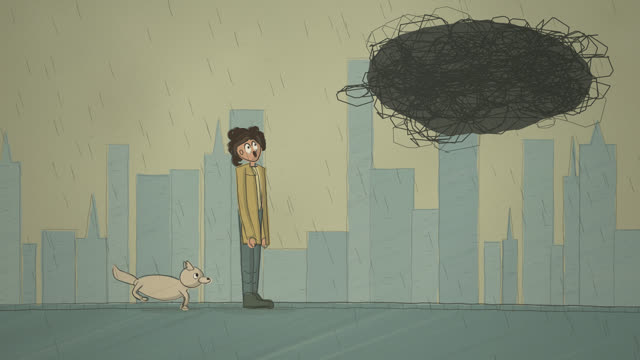
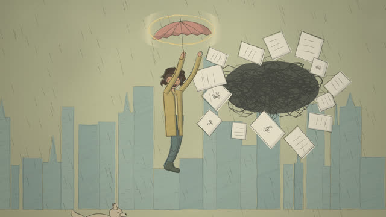
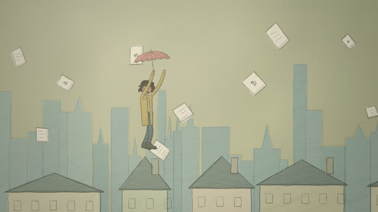
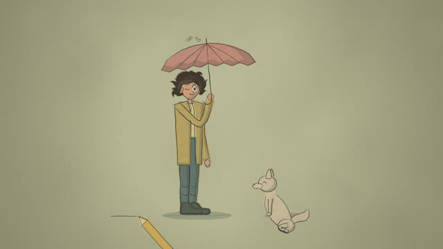

작업 흐름
- 입력
- 주제 하나(도망간 우산, 달에 보내는 편지, 막차 …). 레퍼런스 영상이나 그림이 있으면 그 스틸
- 브리프
- 주인공 · 동반자 · 맞서는 힘 · 장소 · 따뜻한 강조색 하나 · 큰 동작 하나 · 5–9박자 장면을 적은
BRIEF.md - 캐스트
- 주제에 맞게 새로 설계한 사람과 동물 데이터(
cast.js), 양쪽 방향 돌려 보기 · 걸음 · 표정 시트로 채점(앞뒤좌우가 한 몸으로 맞는지, 관절이 가능한 쪽으로 꺾이는지) - 그림
- 겹치고 삐져나가는 연필 선이 초당 8번 끓고, 색은 선에서 비껴 평평하게, 배경은 가장자리로 갈수록 선만 남는 거리 · 지붕 · 다리 · 낙서 덩어리
- 확인
- 무작위 스틸 채점, 콘택트 시트, 모든 샷 그리기 · 빈 프레임 · 결정성 · 관절 범위 · 발이 땅에 닿는지 · 이동 방향과 보는 방향 · 색이 탁한지 · 선이 끓는지 · 악보 검사
- 출력
- 24fps 1920×1080 MP4(코드로 합성한 음악 · 연필 · 종이 효과음 포함), ♪ 버튼으로 소리까지 재생하는 라이브 페이지
cd sketch-cartoon-short/examples/umbrella
node ../../scripts/check.mjs index.html
node ../../scripts/render.mjs cast.html --stills 0 --scale .5
node ../../scripts/render.mjs index.html --sheet 24 --scale .5
node ../../scripts/score.mjs score.js --dur 35.5 --out out/umbrella.wav
node ../../scripts/render.mjs index.html --workers 4 --audio out/umbrella.wav
node ../../scripts/new-film.mjs ../../../my-film요구 사항: Node + Playwright Chromium, ffmpeg. 네트워크와 GPU가 필요 없습니다(CPU에서 1080p 한 프레임 약 0.2초, 35.5초 영상을 워커 4개로 약 3분). 단계별 순서는 SKILL.md에 있습니다.
샘플
예제 「The Runaway Umbrella」의 여덟 샷, 그 캐스트 시트, 시작 템플릿입니다. 카드를 누르면 새 탭에서 그 순간에 멈춘 장면이 열리고, 브라우저가 연필 선부터 직접 그립니다.
The Runaway Umbrella 16:9 · 35.5초 · 8샷
비 오는 날 바람이 소년의 빨간 우산을 채 가고, 소년과 개가 거리와 지붕을 지나 쫓아가다 다리에서 뛰어올라 낙서 먹구름 속에서 우산을 잡습니다. 레퍼런스에 없는 주제로 브리프부터 끝까지 만든 예제입니다.

drawOn, 그 위를 지나가는 연필, 다 그린 뒤 시작되는 비




R.where로 미리 계산해 떨어지는 우산을 맞춤, 펼쳐지는 우산, 종이로 터지는 구름

출발점 캐스트 시트 · 템플릿
새 주제를 시작할 때 쓰는 두 페이지입니다. 캐스트는 데이터로 설계하고 시트로 채점한 뒤에 샷을 씁니다.
실제 작품
이 레포에서 만든 스킬입니다. OscarAI(@Artedeingenio)가 X에 올린 30초 영상이 출발점입니다. 긴 머리 소녀와 귀가 긴 동물이 연필로 그린 도시에서 낙서 괴물에게 쫓기다 다시 빈 종이로 돌아오는 영상으로, Midjourney 스타일 레퍼런스로 만든 스틸을 영상 생성 모델로 움직인 것입니다. 이 스킬은 그 그림체(거친 선, 탁한 색, 과장된 표정, 미완성 느낌)와 이야기 문법만 가져오고, 그림은 직접 만든 캔버스 엔진이 그립니다. 예제 「The Runaway Umbrella」의 코드와 인물, 이야기, 음악은 모두 이 레포의 것입니다.
링크
- SKILL.md 워크플로
- 폴더 lib · scripts · templates · references · examples
- README.md 빠른 시작
- references/BRIEF.md 주제를 브리프로, 캐스트 검토 기준, 스틸 검토 기준
- references/LOOK.md 레퍼런스에서 관찰한 것과 코드 규칙, 팔레트, 캐스트, 움직임
- references/STORY.md 샷 문법, 타이밍, 샷 쓰는 법, 샷 표
- references/KIT.md 연필 · 리그 · 장소 · 효과 · 엔진 · 악보 API
- references/LESSONS.md 겪은 문제와 해결